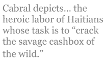

All three of the poems appearing with my English translations in this issue are distinguished by their extraordinary use of the living body in action to express powerful and contradictory notions.
In his sonnet, the Spaniard Miguel Hernández conveys the mute, obtuse helplessness of the lover, divided by his nature, at the mercy of physical yearning, but equally tormented by the spiritual longings that are also part of love. The poet’s language — agitated, repetitious and obsessive — reveals at once the speaker’s state of mind, his painful insight into his own condition, and his inability to alter either his emotions or his behavior.
In the work of the Dominican Manuel del Cabral, the passion invoked is not amatory but moral. “Aire durando,” which I’ve rendered as “Basso Continuo,” employs accusatory rhetorical questions to ferret out the forces responsible for those economic and political injustices that distort the lives of the nameless poor. Those questions, which remain unanswered, alternate with non-sequiturs couched in highly physical imagery. The effect is a powerful opposition between the perceived helplessness of the poor and oppressed, here universalized as “this man,” and suggestions of the immortality earned by his ineffable and indestructible dignity.
And in “Trópico picapedrero,” — “Tropical Scene: Quarriers” — Cabral depicts, in compelling visual detail, the heroic labor of Haitians whose task is to “crack the savage cashbox of the wild.” Their blackness, their sweat, the huge motions of their bodies at work, the force of their picks crashing down on the stones of the quarry that represents their existence, the rising of their voices in stubborn song, are all conveyed with a delicacy of attention that is indistinguishable from devotion. The arresting final stanza, with its extra line, depicts the workers as capable of forcing God himself to become manifest in the brutality of creation, as if they were challenging the deity to show his face to his most unfortunate creatures.
The challenge I faced as translator of these three remarkable poems was the need to preserve the harsh physicality of the language employed by all three, without failing to suggest, also, the vulnerability of the human being as these two poets see him, whether he is the tormented lover Hernandez speaks for, or the socially wretched but spiritually noble laborers who are the focus of Cabral’s attention.
Like the Bull, Born to Sorrow
Like the bull, born to sorrow; like a brute;
born to pain, like the bull, I bear the signs
iron inscribed on my flank in burning lines,
and my male groin is burdened with a fruit.
Like the bull, my heart finds everything minute
because the heart lacks reason, and declines
to let your kiss rest where your love consigns
it — a right that, like a bull, I would dispute.
Like the bull, I am tormented by increasing,
my tongue steeped in my heart, from which it’s poured
into my throat a tempest loud and full.
Like the bull I pursue you with unceasing
desire that you have left pierced by a sword,
like the bull, made for mockery, the bull.
(“Como el toro he nacido para el luto,” Miguel Hernández,
Spain, 1910-1942; tr. R. P. Espaillat)
Spanish original:
Como el toro he nacido para el luto
Como el toro he nacido para el luto
y el dolor, como el toro estoy marcado
por un hierro infernal en el costado
y por varón en la ingle con un fruto.
Como el toro lo encuentra diminuto
todo mi corazón desmesurado,
y del rostro del beso enamorado,
como el toro a tu amor se lo disputo.
Como el toro me crezco en el castigo,
la lengua en corazón tengo bañada
y llevo al cuello un vendaval sonoro.
Como el toro te sigo y te persigo,
y dejas mi deseo en una espada,
como el toro burlado, com el toro.
— Miguel Hernández, Spain, 1910-1942
Basso Continuo
Who is it has killed this man
and left his voice above ground?
There are dead men rising, rising,
as their coffins are laid down.
This sweat...who caused it to perish?
What costs a poor man his breath?
Who is it has killed these hands?
No man is contained by death!
There are dead men who stride taller
the deeper their coffins fall.
Who felled the length of this man
with his upright voice so tall?
There are dead men deep as roots
who feed the harvest their grace.
Who is it has killed these hands,
who has killed this sweat, this face?
There are dead men rising, rising
as coffins sink in their place.
(“Aire durando,” Manuel del Cabral, D. R.)
Spanish original:
Aire durando
¿Quién ha matado este hombre
que su voz no está enterrada?
Hay muertos que van subiendo
cuanto más su ataúd baja...
¿Este sudor...por quién muere?
¿por qué cosa muere un pobre?
¿Quién ha matado estas manos?
¡No cabe en la muerte un hombre!
Hay muertos que van subiendo
cuanto más su ataúd baja...
¿Quién acosto su estatura
que su voz está parada?
Hay muertos como raíces
que hundidas...dan fruto al ala.
¿Quién ha matado estas manos,
este sudor, esta cara?
Hay muertos que van subiendo
cuanto más su ataúd baja...
— Manuel del Cabral, Dominican Republic, 1907-1999
Tropical Scene: Quarriers
Black men are swinging picks against white stones,
sun and the glint of steel tangled together.
And as if pressed and wrung out of their bodies,
their backs are weeping drops of patent leather.
Men with bright voices washing their dark skin
are rinsing it with pearls of stubborn sweat.
They crack the savage cashbox of the wild,
ravage the earth, but not a man on it.
Leaping from stones with each assault of steel,
sparkling ephemeral fragments of the light
are doused and lit again as each blade arcs,
as if in very stone God must ignite.
Submerged in every tiny sphere of sweat,
the morning fits, enormous — but not great.
Out of the skulls they strike fly sudden sparks,
the thoughts that stone labors to formulate.
Black men are singing while they lift their axes,
as if to soften stone with voices ringing.
Hard are these stones to break and break forever;
sweat is the quarry where the picks are swinging.
Against white guiltless stones they swing and swing,
these Haitians, in the rum of noonday sun,
raising a fiery glitter with their picks,
nights smashing bits from day to make it run.
Today, digging the gold of earth, they stumble
upon a richer vein, find that their lode
is morning’s gold, the day on which their humble
picks wear splintered stars, as if they rode
the mountain, hacking God from His abode.
(“Trópico picapedrero,” Manuel del Cabral, D.R.)
Spanish original:
Trópico picapedrero
Hombres negros pican sobre piedras blancas
tienen en sus picos enredado el sol.
Y como si a ratos exprimieran algo...
lloran sus espaldas gotas de charol.
Hombres de voz blanca, su piel negra lavan
la lavan con perlas de terco sudor.
Rompen la alcancía salvaje del monte
y cavan la tierra pero al hombre no.
De las piedras salta, cuando pica el pico
picadillo fatuo de menudo sol,
que se apaga y vuelve cuando vuelve el pico
como si en las piedras reventara Dios.
Dentro de una gota de sudor se mete
la mañana enorme — pero grande no.
Saltan de los cráneos de las piedras chispas
que los pensamientos de las piedras son.
Y los hombres negros cantan cuando pican
como si ablandara las piedras su voz,
más los hombres cavan y no acaban nunca
cavan la cantera: la de su sudor.
Contra la inocencia de las piedras blancas
los haitianos pican bajo un sol de ron
los negros que erizan de chispas las piedras
son noches que rompen pedazos de sol.
Hoy buscando el oro de la tierra encuentran
el oro más alto, porque su filón
es aquel del día que ponen en los picos
astillas de estrellas, como si estuvieran
sobre la montaña picoteando a Dios.
— Manuel del Cabral, Dominican Republic,
1907-1999.
Miguel Hernandez, a Spanish poet, lived from 1910 to 1942. Gaoled for many years by the Phalangists, Hernadez, poor and self-taught, wrote several volumes of poetry, known as his Cancionero y romancero de ausencia (Songs and Ballads of Absence). He died in prison of tuberculosis.
His talent has been compared to that of Frederico Garcia Lorca, another great poet murdered in his youth by a policial regime.
Manuel del Cabral, poet, writer and novelist, was born in Santo Domingo, Dominican Republic, in 1907. While still a teenager he lived in the United States, and then toured various countries while serving in the diplomatic corps, before settling for many years in Argentina, acknowledged by him as his second home. He has been called one of the great voices of the Americas by such authors as the four Nobel Prize winners Gabriela Mistral, Andre Gide, Juan Ramon Jimenez and Octavio Paz, among numerous others. He received the National Prize for Literature in 1992, and died in Santo Domingo in 1999.
Rhina P. Espaillat was born in the Dominican Republic and writes in English and in her native Spanish. She also translates, most notably the work of St. John of the Cross into English, and Robert Frost into Spanish. She lives in Newburyport, Massachusetts, with her sculptor husband, Alfred Moskowitz, and is active with several literary organizations in the area, including the Powow River Poets. Her ten published collections — seven books and three chapbooks — include, most recently, a bilingual volume of essays and poems titled Agua de dos rios(Water from Two Rivers) and a collection of short stories, El olor de la memoria/The Scent of Memory, published in the D. R. in 2006 and 2007, respectively. Her most recent poetry books published in the U. S. in English alone are The Shadow I Dress In (2004) and Playing at Stillness (2005). Her awards include the T. S. Eliot Prize in Poetry, the Wilbur Award, the Howard Nemerov Sonnet Award (twice), three of the yearly prizes given by the Poetry Society of America, several from the New England Poetry Club, the Robert Frost Foundation’s “Tree at My Window” Award, and several national awards from the Dominican Republic’s Ministry of Culture, among others.